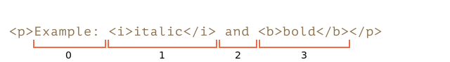
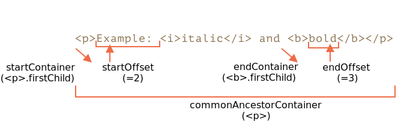
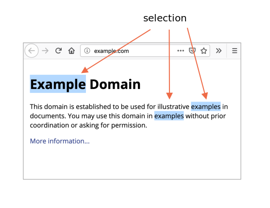

libs:
在本章中，我们将介绍文档中的选择以及在表单字段（如 <input>）中的选择。
JavaScript 可以获取现有选择，选择/取消全部或部分选择，从文档中删除所选部分，将其包装到一个标签（tag）中，等。
你可以在本文最后的“总结”部分中找到使用方法。但是，如果你阅读整篇内容，将会有更多收获。底层的（underlying）Range 和 Selection 对象很容易掌握，因此，你不需要任何诀窍便可以使用它们做你想要做的事儿。
选择的基本概念是 Range：本质上是一对“边界点”：范围起点和范围终点。
每个点都被表示为一个带有相对于起点的相对偏移（offset）的父 DOM 节点。如果父节点是元素节点，则偏移量是子节点的编号，对于文本节点，则是文本中的位置。下面举例说明。
让我们选择一些东西。
首先，我们可以创建一个范围（构造器没有参数）：
let range = new Range();然后，我们可以使用 range.setStart(node, offset) 和 range.setEnd(node, offset) 来设置选择边界。
例如，考虑以下 HTML 片段：
<p id="p">Example: <i>italic</i> and <b>bold</b></p>这是其 DOM 结构，请注意，这里的文本节点对我们很重要：
让我们来选择 "Example: <i>italic</i>"。它是 <p> 的前两个子节点（文本节点也算在内）：

<p id="p">Example: <i>italic</i> and <b>bold</b></p>
<script>
let range = new Range();
range.setStart(p, 0);
range.setEnd(p, 2);
// 范围的 toString 以文本形式返回其内容（不带标签）
alert(range); // Example: italic
// 将此范围应用于文档选择（后文有解释）
document.getSelection().addRange(range);
</script>range.setStart(p, 0) —— 将起点设置为 <p> 的第 0 个子节点（即文本节点 "Example: "）。range.setEnd(p, 2) —— 覆盖范围至（但不包括）<p> 的第 2 个子节点（即文本节点 " and "，但由于不包括末节点，所以最后选择的节点是 <i>）。这是一个更灵活的测试台，你可以在其中尝试更多不同的情况：
<p id="p">Example: <i>italic</i> and <b>bold</b></p>
From <input id="start" type="number" value=1> – To <input id="end" type="number" value=4>
<button id="button">Click to select</button>
<script>
button.onclick = () => {
let range = new Range();
range.setStart(p, start.value);
range.setEnd(p, end.value);
// 应用选择，后文有解释
document.getSelection().removeAllRanges();
document.getSelection().addRange(range);
};
</script>例如，从 1 到 4 选择得到的范围为 <i>italic</i> and <b>bold</b>。
我们不必在 setStart 和 setEnd 中使用相同的节点。一个范围可能跨越许多不相关的节点。唯一要注意的是终点要在起点之后。
让我们选择部分文本，像这样：
这也是可以做到的，我们只需要将起点和终点设置为文本节点中的相对偏移量即可。
我们需要创建一个范围，它：
<p> 的第一个子节点的位置 2 开始（选择 "Example: " 中除前两个字母外的所有字母）<b> 的第一个子节点的位置 3 结束（选择 "bold" 的前三个字母，就这些）：<p id="p">Example: <i>italic</i> and <b>bold</b></p>
<script>
let range = new Range();
range.setStart(p.firstChild, 2);
range.setEnd(p.querySelector('b').firstChild, 3);
alert(range); // ample: italic and bol
// 使用此范围进行选择（后文有解释）
window.getSelection().addRange(range);
</script>range 对象具有以下属性：

startContainer，startOffset —— 起始节点和偏移量，<p> 中的第一个文本节点和 2。endContainer，endOffset —— 结束节点和偏移量，<b> 中的第一个文本节点和 3。collapsed —— 布尔值，如果范围在同一点上开始和结束（所以范围内没有内容）则为 true，falsecommonAncestorContainer —— 在范围内的所有节点中最近的共同祖先节点，<p> 有许多便利的方法可以操纵范围。
设置范围的起点：
setStart(node, offset) 将起点设置在：node 中的位置 offsetsetStartBefore(node) 将起点设置在：node 前面setStartAfter(node) 将起点设置在：node 后面设置范围的终点（类似的方法）：
setEnd(node, offset) 将终点设置为：node 中的位置 offsetsetEndBefore(node) 将终点设置为：node 前面setEndAfter(node) 将终点设置为：node 后面如前所述，node 既可以是文本节点，也可以是元素节点：对于文本节点，offset 偏移的是字符数，而对于元素节点则是子节点数。
其他：
selectNode(node) 设置范围以选择整个 nodeselectNodeContents(node) 设置范围以选择整个 node 的内容collapse(toStart) 如果 toStart=true 则设置 end=start，否则设置 start=end，从而折叠范围cloneRange() 创建一个具有相同起点/终点的新范围如要操纵范围内的内容：
deleteContents() —— 从文档中删除范围内容extractContents() —— 从文档中删除范围内容，并将删除的内容作为 DocumentFragment 返回cloneContents() —— 复制范围内容，并将复制的内容作为 DocumentFragment 返回insertNode(node) —— 在范围的起始处将 node 插入文档surroundContents(node) —— 使用 node 将所选范围内容包裹起来。要使此操作有效，则该范围必须包含其中所有元素的开始和结束标签：不能像 <i>abc 这样的部分范围。使用这些方法，我们基本上可以对选定的节点执行任何操作。
这是在测试台上看到它们的实际效果：
点击按钮运行所选内容上的方法，点击 "resetExample" 进行重置。
<p id="p">Example: <i>italic</i> and <b>bold</b></p>
<p id="result"></p>
<script>
let range = new Range();
// 下面演示了上述的每个方法：
let methods = {
deleteContents() {
range.deleteContents()
},
extractContents() {
let content = range.extractContents();
result.innerHTML = "";
result.append("extracted: ", content);
},
cloneContents() {
let content = range.cloneContents();
result.innerHTML = "";
result.append("cloned: ", content);
},
insertNode() {
let newNode = document.createElement('u');
newNode.innerHTML = "NEW NODE";
range.insertNode(newNode);
},
surroundContents() {
let newNode = document.createElement('u');
try {
range.surroundContents(newNode);
} catch(e) { alert(e) }
},
resetExample() {
p.innerHTML = `Example: <i>italic</i> and <b>bold</b>`;
result.innerHTML = "";
range.setStart(p.firstChild, 2);
range.setEnd(p.querySelector('b').firstChild, 3);
window.getSelection().removeAllRanges();
window.getSelection().addRange(range);
}
};
for(let method in methods) {
document.write(`<div><button onclick="methods.${method}()">${method}</button></div>`);
}
methods.resetExample();
</script>还有比较范围的方法，但是很少使用。当你需要它们时，请参考 规范 或 MDN 手册。
Range 是用于管理选择范围的通用对象。我们可能会创建此类对象，并传递它们 —— 它们在视觉上不会自行选择任何内容。
文档选择是由 Selection 对象表示的，可通过 window.getSelection() 或 document.getSelection() 来获取。
一个选择可以包括零个或多个范围。至少，Selection API 规范 是这么说的。不过实际上，只有 Firefox 允许使用 key:Ctrl+click (Mac 上用 key:Cmd+click) 在文档中选择多个范围。
这是在 Firefox 中做的一个具有 3 个范围的选择的截图：

其他浏览器最多支持 1 个范围。正如我们将看到的，某些 Selection 方法暗示可能有多个范围，但同样，在除 Firefox 之外的所有浏览器中，范围最多是 1。
与范围相似，选择的起点称为“锚点（anchor）”，终点称为“焦点（focus）”。
主要的选择属性有：
anchorNode —— 选择的起始节点，anchorOffset —— 选择开始的 anchorNode 中的偏移量，focusNode —— 选择的结束节点，focusOffset —— 选择开始处 focusNode 的偏移量，isCollapsed —— 如果未选择任何内容（空范围）或不存在，则为 true 。rangeCount —— 选择中的范围数，除 Firefox 外，其他浏览器最多为 1。有很多选择内容的方式，取决于用户的操作：鼠标，热键，手机上的点击等。
其中的某些方式，例如鼠标，允许从两个方向创建相同的选择：“从左到右”和“从右到左”。
如果在文档中，选择的起点（anchor）在终点（focus）之前，则称此选择具有 "forward" 方向。
例如，如果用户使用鼠标从 "Example" 开始选择到 "italic"：

否则，如果是从 "italic" 的末尾开始选择到 "Example"，则所选内容将被定向为 "backward"，其焦点（focus）将在锚点（anchor）之前：

这与始终指向前方的 `Range` 对象不同：范围的起点不能在终点之后。有一些事件可以跟踪选择：
elem.onselectstart —— 当选择从 elem 上开始时，例如，用户按下鼠标键并开始移动鼠标。document.onselectionchange —— 当选择变动时。document 上设置。下面是一个小型演示，它随更改动态显示选择边界：
<p id="p">Select me: <i>italic</i> and <b>bold</b></p>
From <input id="from" disabled> – To <input id="to" disabled>
<script>
document.onselectionchange = function() {
let {anchorNode, anchorOffset, focusNode, focusOffset} = document.getSelection();
from.value = `${anchorNode && anchorNode.data}:${anchorOffset}`;
to.value = `${focusNode && focusNode.data}:${focusOffset}`;
};
</script>要获取整个选择：
document.getSelection().toString()。cloneContents() 方法（如果我们不支持 Firefox 多选的话，则仅取第一个范围）。 下面是将选择内容获取为文本和 DOM 节点的演示：
<p id="p">Select me: <i>italic</i> and <b>bold</b></p>
Cloned: <span id="cloned"></span>
<br>
As text: <span id="astext"></span>
<script>
document.onselectionchange = function() {
let selection = document.getSelection();
cloned.innerHTML = astext.innerHTML = "";
// 从范围复制 DOM 节点（这里我们支持多选）
for (let i = 0; i < selection.rangeCount; i++) {
cloned.append(selection.getRangeAt(i).cloneContents());
}
// 获取为文本形式
astext.innerHTML += selection;
};
</script>添加/移除范围的选择方法：
getRangeAt(i) —— 获取从 0 开始的第 i 个范围。在除 Firefox 之外的所有浏览器中，仅使用 0。addRange(range) —— 将 range 添加到选择中。如果选择已有关联的范围，则除 Firefox 外的所有浏览器都将忽略该调用。removeRange(range) —— 从选择中删除 range。removeAllRanges() —— 删除所有范围。empty() —— removeAllRanges 的别名。另外，还有一些方便的方法可以直接操作选择范围，而无需使用 Range：
collapse(node, offset) —— 用一个新的范围替换选定的范围，该新范围从给定的 node 处开始，到偏移 offset 处结束。setPosition(node, offset) —— collapse 的别名。collapseToStart() —— 折叠（替换为空范围）到选择起点，collapseToEnd() —— 折叠到选择终点，extend(node, offset) —— 将选择的焦点（focus）移到给定的 node，位置偏移 oofset，setBaseAndExtent(anchorNode, anchorOffset, focusNode, focusOffset) —— 用给定的起点 anchorNode/anchorOffset 和终点 focusNode/focusOffset 来替换选择范围。选中它们之间的所有内容。selectAllChildren(node) —— 选择 node 的所有子节点。deleteFromDocument() —— 从文档中删除所选择的内容。containsNode(node, allowPartialContainment = false) —— 检查选择中是否包含 node（特别是如果第二个参数是 true 的话）因此，对于许多任务，我们可以调用 Selection 方法，而无需访问底层的（underlying）Range 对象。
例如，选择段落 <p> 的全部内容：
<p id="p">Select me: <i>italic</i> and <b>bold</b></p>
<script>
// 从 <p> 的第 0 个子节点选择到最后一个子节点
document.getSelection().setBaseAndExtent(p, 0, p, p.childNodes.length);
</script>使用范围来完成同一个操作：
<p id="p">Select me: <i>italic</i> and <b>bold</b></p>
<script>
let range = new Range();
range.selectNodeContents(p); // 或者也可以使用 selectNode(p) 来选择 <p> 标签
document.getSelection().removeAllRanges(); // 清除现有选择（如果有的话）
document.getSelection().addRange(range);
</script>如果选择已存在，则首先使用 `removeAllRanges()` 将其清空。然后添加范围。否则，除 Firefox 外的所有浏览器都将忽略新范围。
某些选择方法例外，它们会替换现有的选择，例如 `setBaseAndExtent`。诸如 input 和 textarea 等表单元素提供了 专用的选择 API，没有 Selection 或 Range 对象。由于输入值是纯文本而不是 HTML，因此不需要此类对象，一切都变得更加简单。
属性：
input.selectionStart —— 选择的起始位置（可写），input.selectionEnd —— 选择的结束位置（可写），input.selectionDirection —— 选择方向，其中之一："forward"，"backward" 或 "none"（例如使用鼠标双击进行的选择），事件：
input.onselect —— 当某个东西被选择时触发。方法：
input.select() —— 选择文本控件中的所有内容（可以是 textarea 而不是 input），
input.setSelectionRange(start, end, [direction]) —— 在给定方向上（可选），从 start 一直选择到 end。
input.setRangeText(replacement, [start], [end], [selectionMode]) —— 用新文本替换范围中的文本。
可选参数 start 和 end，如果提供的话，则设置范围的起点和终点，否则使用用户的选择。
最后一个参数 selectionMode 决定替换文本后如何设置选择。可能的值为：
"select" —— 将选择新插入的文本。"start" —— 选择范围将在插入的文本之前折叠（光标将在其之前）。"end" —— 选择范围将在插入的文本之后折叠（光标将紧随其后）。"preserve" —— 尝试保留选择。这是默认值。现在，让我们看看这些方法的实际使用。
例如，此段代码使用 onselect 事件来跟踪选择：
<textarea id="area" style="width:80%;height:60px">
Selecting in this text updates values below.
</textarea>
<br>
From <input id="from" disabled> – To <input id="to" disabled>
<script>
area.onselect = function() {
from.value = area.selectionStart;
to.value = area.selectionEnd;
};
</script>请注意：
onselect 是在某项被选择时触发，而在选择被删除时不触发。document.onselectionchange 事件，因为它与 document 选择和范围不相关。一些浏览器会生成它，但我们不应该依赖它。我们可以更改 selectionStart 和 selectionEnd，二者设定了选择。
一个重要的边界情况是 selectionStart 和 selectionEnd 彼此相等。那正是光标位置。或者，换句话说，当未选择任何内容时，选择会折叠在光标位置。
因此，通过将 selectionStart 和 selectionEnd 设置为相同的值，我们可以移动光标。
例如：
<textarea id="area" style="width:80%;height:60px">
Focus on me, the cursor will be at position 10.
</textarea>
<script>
area.onfocus = () => {
// 设置零延迟 setTimeout 以在浏览器 "focus" 行为完成后运行
setTimeout(() => {
// 我们可以设置任何选择
// 如果 start=end，则光标就会在该位置
area.selectionStart = area.selectionEnd = 10;
});
};
</script>如要修改选择的内容，我们可以使用 input.setRangeText() 方法。当然，我们可以读取 selectionStart/End，并在了解选择的情况下更改 value 的相应子字符串，但是 setRangeText 功能更强大，通常更方便。
那是一个有点复杂的方法。使用其最简单的单参数形式，它可以替换用户选择的范围并删除该选择。
例如，这里的用户的选择将被包装在 *...* 中：
<input id="input" style="width:200px" value="Select here and click the button">
<button id="button">Wrap selection in stars *...*</button>
<script>
button.onclick = () => {
if (input.selectionStart == input.selectionEnd) {
return; // 什么都没选
}
let selected = input.value.slice(input.selectionStart, input.selectionEnd);
input.setRangeText(`*${selected}*`);
};
</script>使用更多参数，我们可以设置范围 start 和 end。
在下面这个示例中，我们在输入文本中找到 "THIS"，将其替换，并保持替换文本的选中状态：
<input id="input" style="width:200px" value="Replace THIS in text">
<button id="button">Replace THIS</button>
<script>
button.onclick = () => {
let pos = input.value.indexOf("THIS");
if (pos >= 0) {
input.setRangeText("*THIS*", pos, pos + 4, "select");
input.focus(); // 聚焦（focus），以使选择可见
}
};
</script>如果未选择任何内容，或者我们在 setRangeText 中使用了相同的 start 和 end，则仅插入新文本，不会删除任何内容。
我们也可以使用 setRangeText 在“光标处”插入一些东西。
这是一个按钮，按下后会在光标位置插入 "HELLO"，然后光标紧随其后。如果选择不为空，则将其替换（我们可以通过比较 selectionStart!=selectionEnd 来进行检查，为空则执行其他操作）：
<input id="input" style="width:200px" value="Text Text Text Text Text">
<button id="button">Insert "HELLO" at cursor</button>
<script>
button.onclick = () => {
input.setRangeText("HELLO", input.selectionStart, input.selectionEnd, "end");
input.focus();
};
</script>要使某些内容不可选，有三种方式：
使用 CSS 属性 user-select: none。
<style>
#elem {
user-select: none;
}
</style>
<div>Selectable <div id="elem">Unselectable</div> Selectable</div> 这样不允许选择从 elem 开始。但是用户可以在其他地方开始选择，并将 elem 包含在内。
然后 elem 将成为 document.getSelection() 的一部分，因此选择实际发生了，但是在复制粘贴中，其内容通常会被忽略。
防止 onselectstart 或 mousedown 事件中的默认行为。
<div>Selectable <div id="elem">Unselectable</div> Selectable</div>
<script>
elem.onselectstart = () => false;
</script> 这样可以防止在 elem 上开始选择，但是访问者可以在另一个元素上开始选择，然后扩展到 elem。
当同一行为上有另一个事件处理程序触发选择时（例如 mousedown），这会很方便。因此我们禁用选择以避免冲突，仍然允许复制 elem 内容。
我们还可以使用 document.getSelection().empty() 来在选择发生后清除选择。很少使用这种方法，因为这会在选择项消失时导致不必要的闪烁。
我们介绍了用于选择的两种不同的 API：
Selection 和 Range 对象。input，textarea：其他方法和属性。第二个 API 非常简单，因为它处理的是文本。
最常用的方案一般是：
获取选择：
let selection = document.getSelection();
let cloned = /* 要将所选的节点克隆到的元素 */;
// 然后将 Range 方法应用于 selection.getRangeAt(0)
// 或者，像这样，用于所有范围，以支持多选
for (let i = 0; i < selection.rangeCount; i++) {
cloned.append(selection.getRangeAt(i).cloneContents());
}设置选择
let selection = document.getSelection();
// 直接：
selection.setBaseAndExtent(...from...to...);
// 或者我们可以创建一个范围并：
selection.removeAllRanges();
selection.addRange(range);最后，关于光标。在诸如 <textarea> 之类的可编辑元素中，光标的位置始终位于选择的起点或终点。我们可以通过设置 elem.selectionStart 和 elem.selectionEnd 来获取光标位置或移动光标。